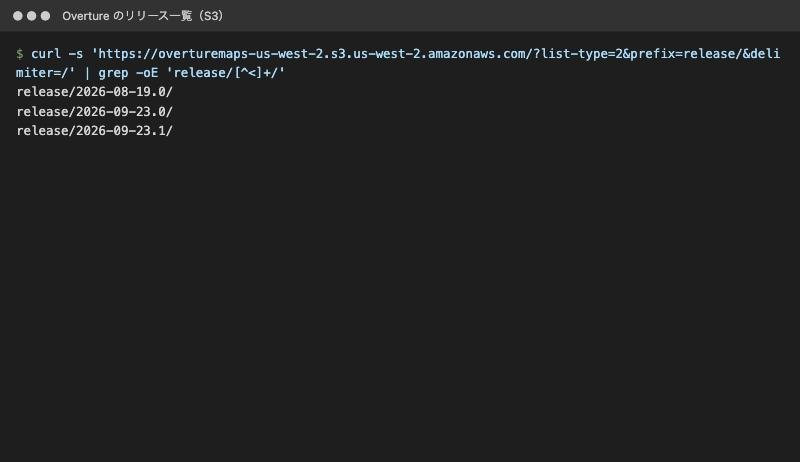
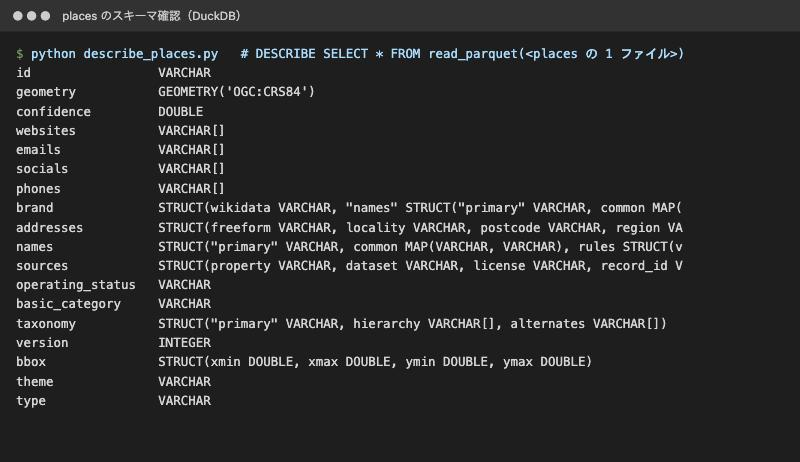
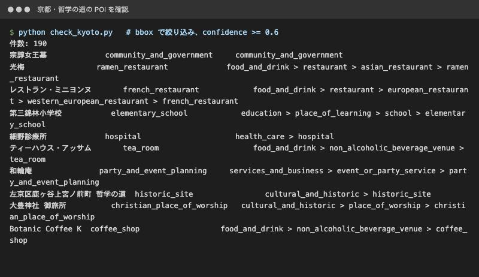
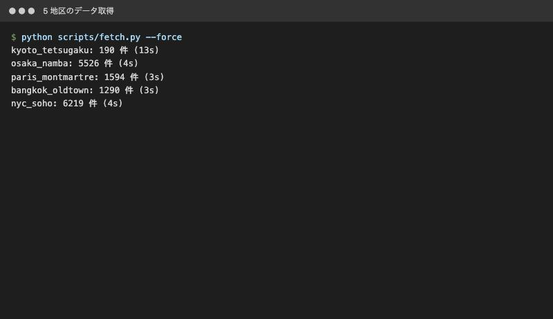
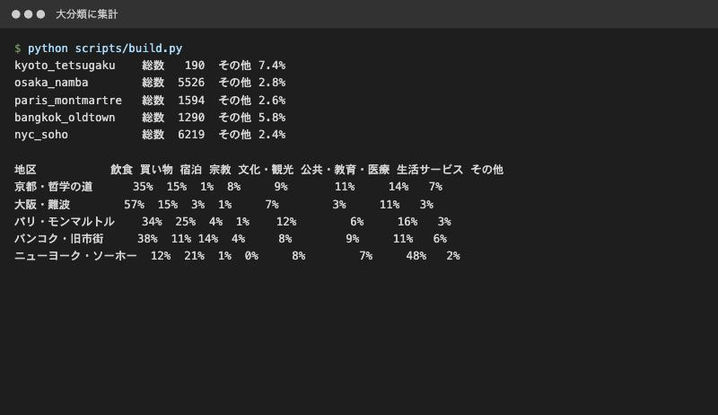
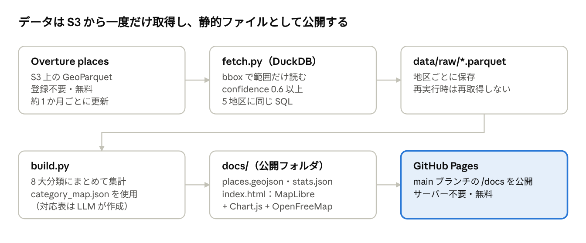
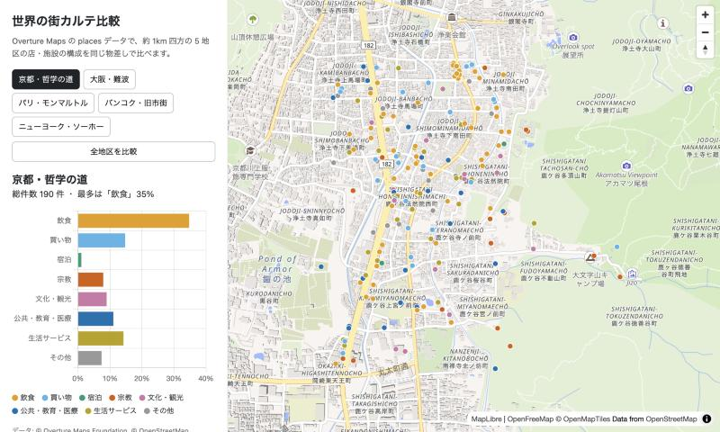
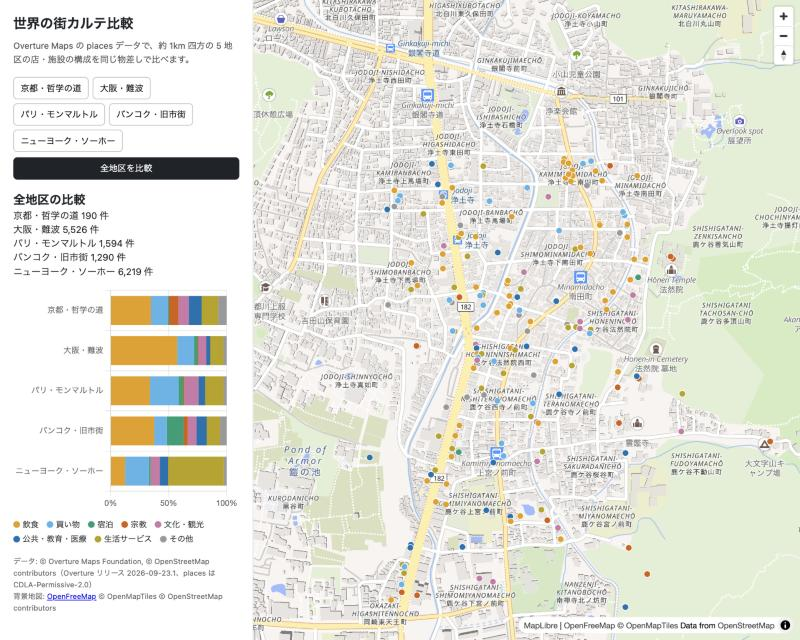
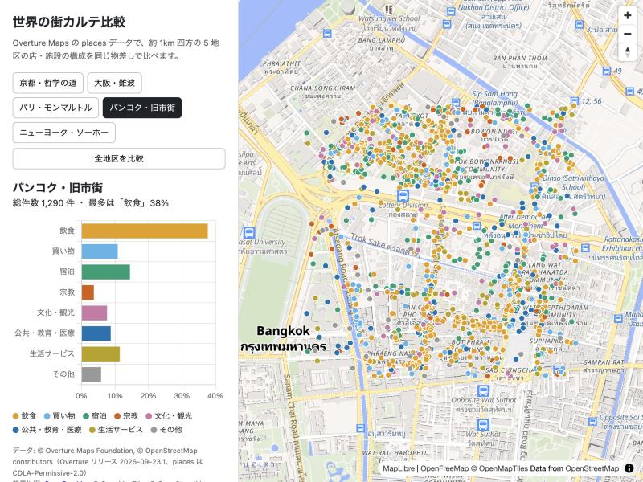

Overture Maps で「世界の街カルテ」を作った — 同じ SQL で 5 つの街を比べる
Overture Maps の places データを使って、世界 5 地区の店や施設の構成を同じ物差しで比べる Web 地図を作りました。LLM（Claude Code）と一緒に、約 4 時間・費用 0 円で、データ取得から GitHub Pages での公開まで進めています。
- 公開ページ：https://akira-motoyoshi.github.io/town-karte/
- リポジトリ：https://github.com/Akira-Motoyoshi/town-karte
使った技術：Overture Maps
Overture Maps は、Overture Maps Foundation が公開している世界規模のオープンな地図データです。OpenStreetMap をはじめ、複数の企業のデータを統合し、約 1 か月ごとにリリースされています。
今回注目したのは次の 3 つの特性です。
- 世界共通のスキーマとカテゴリ体系：国が違っても、同じ列・同じ分類でデータが入っている
- クラウドに置かれた GeoParquet：S3 上のファイルを、DuckDB から登録なし・無料で、必要な範囲だけ読める
- places（店・施設）のカテゴリと信頼度：各 POI に階層付きのカテゴリと
confidence（信頼度）が付いている
補助として、データ処理に DuckDB、地図表示に MapLibre GL JS、背景地図に OpenFreeMap、グラフに Chart.js を使いました。
やろうとしたこと
「世界中どこでも同じ物差しで測れる」という Overture の特性を、いちばん素直に見せられる題材として「街の比較」を選びました。
約 1km 四方の 5 地区について、店や施設を 8 つの大分類（飲食、買い物、宿泊、宗教、文化・観光、公共・教育・医療、生活サービス、その他）に分け、構成比を並べます。
| 地区 | 選んだ理由 |
|---|---|
| 京都・哲学の道 | 寺社の多い観光地 |
| 大阪・難波 | 飲食と買い物の繁華街 |
| パリ・モンマルトル | 欧州の観光地 |
| バンコク・旧市街 | 寺院と宿が多いアジアの観光地 |
| ニューヨーク・ソーホー | 北米の商業地区 |
OpenStreetMap だけで同じことをすると、国や地域ごとにタグの付け方が違うため、分類をそろえる作業が必要になります。Overture ならその手間がほぼありません。
作成過程
1. 最新リリースとスキーマを確認する
まず S3 のバケットを一覧し、最新リリースが 2026-09-23.1 であることを確認しました。

次に DuckDB で places のスキーマを確認しました。計画段階では categories 列を使う想定でしたが、このリリースでは basic_category と taxonomy（primary と hierarchy）に変わっていました。最初に実データを確認したことで、手戻りを防げました。

2. 1 地区で試す
京都・哲学の道の範囲で、bbox 列による絞り込みと confidence >= 0.6 を試しました。190 件が返り、taxonomy.hierarchy に「food_and_drink > restaurant > asian_restaurant > ramen_restaurant」のような階層が入っていることが分かりました。

ここで 1 つつまずきました。DuckDB の初期設定のまま s3:// で読むと、認証情報を探しに行って 5 分以上止まってしまいます。空のキーで匿名アクセスの設定（CREATE SECRET）をすると、約 13 秒で返るようになりました。
3. 5 地区を同じ SQL で取得する
地区の範囲を areas.json にまとめ、同じ SQL を 5 回当てるスクリプト fetch.py を作りました。世界のデータセット全体をダウンロードせず、必要な範囲だけを読むので、5 地区で約 20 秒です。

4. 8 つの大分類にまとめる
当初は、数百ある細かいカテゴリを LLM に 8 分類へ振り分けさせる予定でした。しかし taxonomy.hierarchy の 1 段目がすでに「food_and_drink」「shopping」「lodging」のような大分類になっていたため、その 1 段目（宗教だけは 2 段目の place_of_worship）を 8 分類に対応させる方式に変えました。対応表は十数行で済みました。

5. 地図ページを作り、公開する
集計結果を GeoJSON と JSON に書き出し、MapLibre GL JS と Chart.js で静的なページを作りました。サーバーは使わず、GitHub Pages で公開しています。

実装は Claude Code に任せ、私は範囲の決定、分類方式の判断、結果の確認を担当しました。リポジトリ作成から Pages の有効化までも GitHub CLI 経由で自動化しています。
できたもの
地区のボタンを押すと地図がその場所へ移動し、POI が大分類の色で表示されます。左のグラフには、その地区の構成比が出ます。

「全地区を比較」を押すと、5 地区の構成比が積み上げ棒で並びます。


比べてみると、街の性格がはっきり出ました。
- 大阪・難波：飲食が 57% で最多。そのうち酒類を出す店が 666 件あり、全体の約 12% を占める
- バンコク・旧市街：宿泊が 14% で、他の 4 地区（1〜4%）の 3 倍以上
- ニューヨーク・ソーホー：生活サービスが 48%。中身は専門サービスやオフィス、不動産が中心で、店の街というより事業所の街だった
- 京都・哲学の道：宗教が 8% で 5 地区中最多
- パリ・モンマルトル：買い物が 25% で最多
Overture の特性がどう反映されているか
- 世界共通スキーマ：5 地区すべてに同じ SQL、同じ分類表を当てています。国ごとの調整は一切していません。
- カテゴリの階層：
taxonomy.hierarchyの上位をそのまま使えたので、分類作業がほぼ不要になりました。 - クラウドネイティブな配布：DuckDB で範囲だけ読み、5 地区の取得が約 20 秒。アカウント登録も費用もかかりません。
- 信頼度：
confidenceで質の低いデータを落としてから集計しています。
一方で、限界も見えました。
- 地区ごとの件数差が大きく、ソーホー 6,219 件に対して哲学の道は 190 件でした。住宅地や山すそを含むことに加え、網羅率の差もあると考えられます。
- 大豊神社が
christian_place_of_worshipに分類されていました。神道を表すカテゴリがなく、日本の神社が誤分類される例があります。
「同じ物差し」は強力ですが、物差しそのものの偏りも一緒に見える、というのが今回の発見です。
使ったもの
- データ：Overture Maps Foundation places（リリース 2026-09-23.1、CDLA-Permissive-2.0）© Overture Maps Foundation, © OpenStreetMap contributors
- 背景地図：OpenFreeMap © OpenMapTiles © OpenStreetMap contributors
- ツール：DuckDB、MapLibre GL JS、Chart.js、GitHub Pages、Claude Code